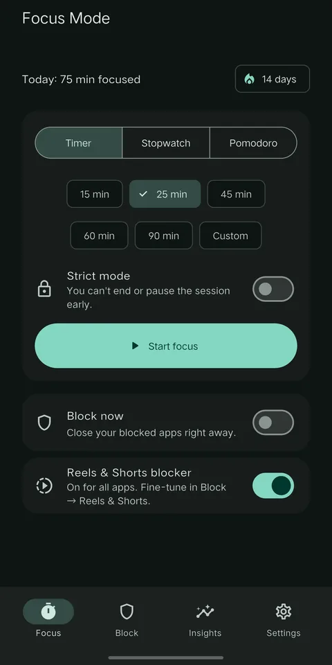
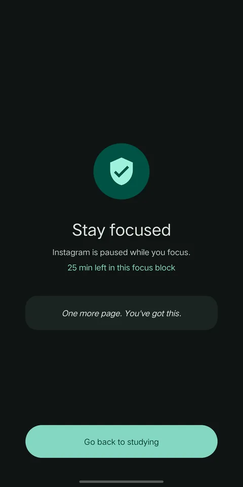
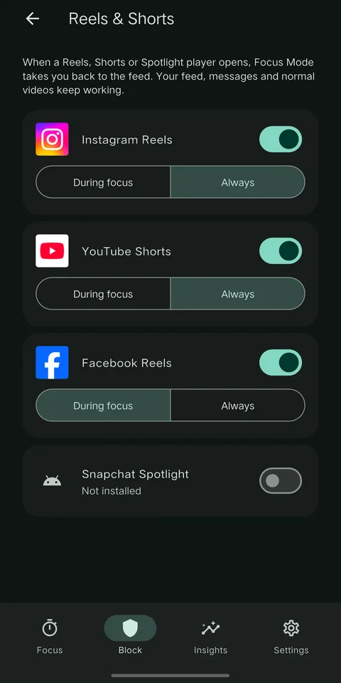
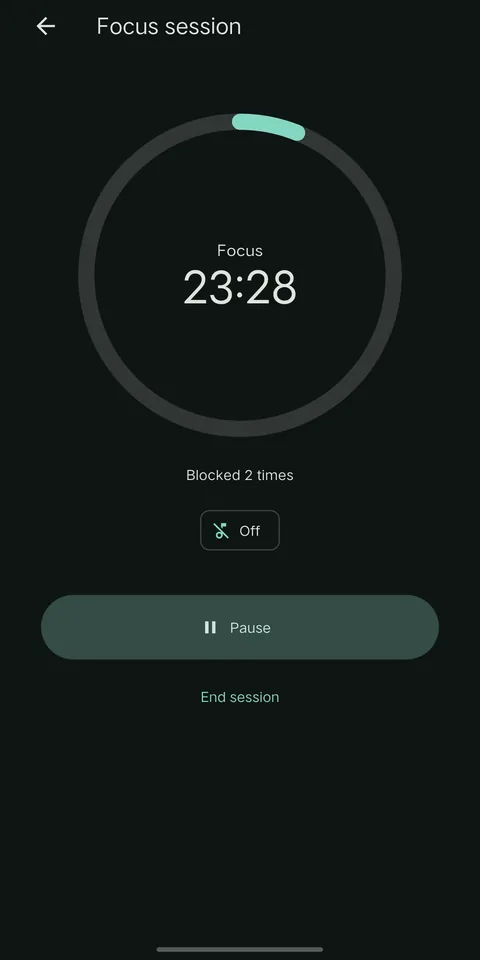
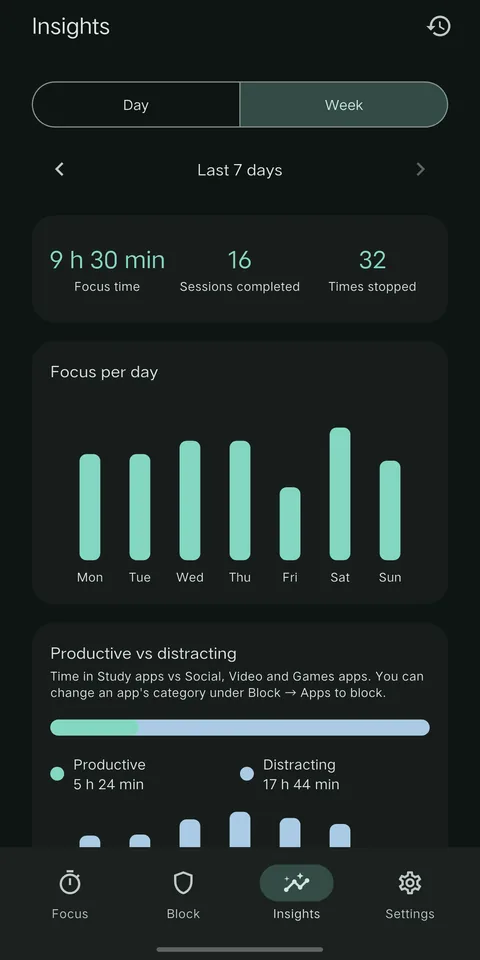
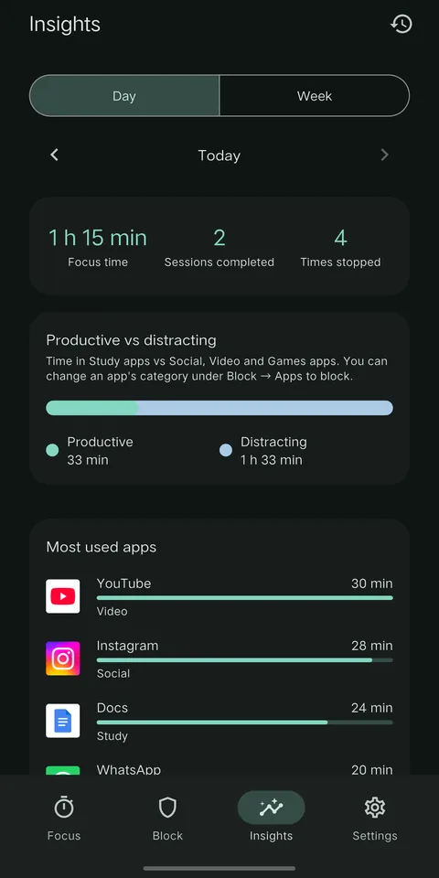
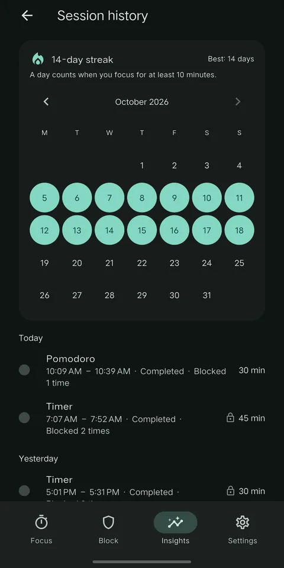
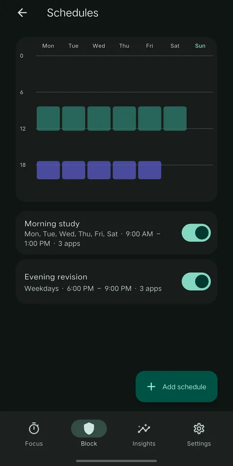

App blocker
Close Instagram, YouTube, games or any app you pick while you focus, with a calm "Stay focused" screen instead.
Block the apps, Reels, Shorts and websites that eat your time, and see how much you really focused.

Features
Every blocking and focus feature is free. Pick what distracts you, start a session, and let Focus Mode hold the line.
Close Instagram, YouTube, games or any app you pick while you focus, with a calm "Stay focused" screen instead.
Block only Instagram Reels, YouTube Shorts, Facebook Reels and Snapchat Spotlight. Your feed, messages and normal videos keep working.
Set your own focus and break lengths. Strict mode makes a session you can't end or pause early.
Block apps automatically, for example Monday to Saturday 9:00 to 13:00, or give each app a daily time budget.
Block the sites you choose in your browser, or allow only the study sites you need. Optional adult-content filter.
Daily and weekly focus time, productive vs distracting screen time, top apps, and a streak calendar.
Only videos from the study channels you add will play. Everything else on YouTube is blocked.
Original rain, waves and deep-focus sounds, plus light, dark and calm colour themes.
One switch closes all your blocked apps right away, no session needed.
Screens
Swipe to see more.







How it works
Focus Mode walks you through each step inside the app.
Choose the apps to block, and switch on the Reels & Shorts blocker if you want it.
Read the short explanation, then turn on Focus Mode in Android's Accessibility settings. This is how it can close the apps you picked.
Start a timer or Pomodoro, or turn on Block now. Blocked apps show "Stay focused" until your session ends.
Private by default
It uses Android's Accessibility service only to recognise the apps, videos and websites you chose to block. There is no account and no sign-up.
Read the full privacy policyHelp
Some phones stop apps in the background to save battery, which can switch off blocking. Follow the steps for your phone. Menu names differ a little between versions.
Open Focus Mode → Settings → Permissions. If Accessibility shows as off or stopped, switch Focus Mode off and on again in Android's Accessibility settings. If it still doesn't work, email me with your phone model and Android version.
FAQ
Yes. Every blocking and focus feature is free. Small ads keep it that way, and they never appear while you focus or on the block screen. Extra colour themes and sounds can be unlocked for 7 days by watching an optional short ad.
Android only lets an app close other apps, Reels or websites through the Accessibility service. Focus Mode uses it only for the apps you choose to block, and nothing it sees leaves your phone. The app explains this on a full screen before asking.
Yes. With the Reels & Shorts blocker, only the short-video player is blocked. Your feed, messages and normal videos keep working. You can also block a whole app only during your focus sessions.
A strict session can't be ended or paused early, so you can't give in to a distraction halfway. Use it on days you really need it.
It is tested in Chrome and also supports other popular Android browsers. If a site isn't blocked in your browser, please let me know.
Android phones with Android 8.0 or newer. There is no iPhone version.
Everything is stored on your phone only. Uninstalling Focus Mode deletes all of it. There is no account to close.
No. Focus Mode is an independent app made by Akash Kush. It is not affiliated with any government body, exam board or other organisation, and it does not provide government or exam information.
Contact
I read every message. Tell me your phone model and what happened, and I'll try to fix it in the next update.